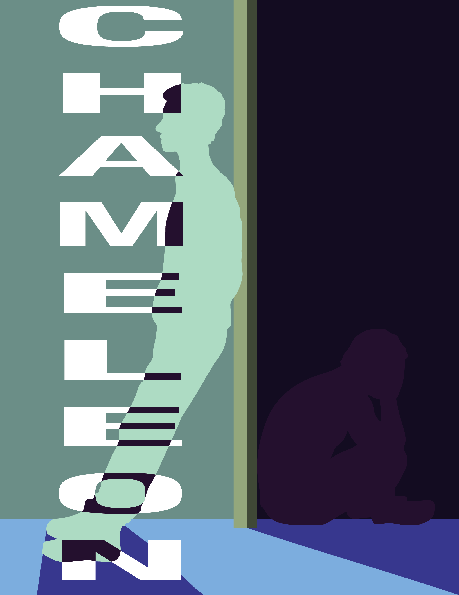
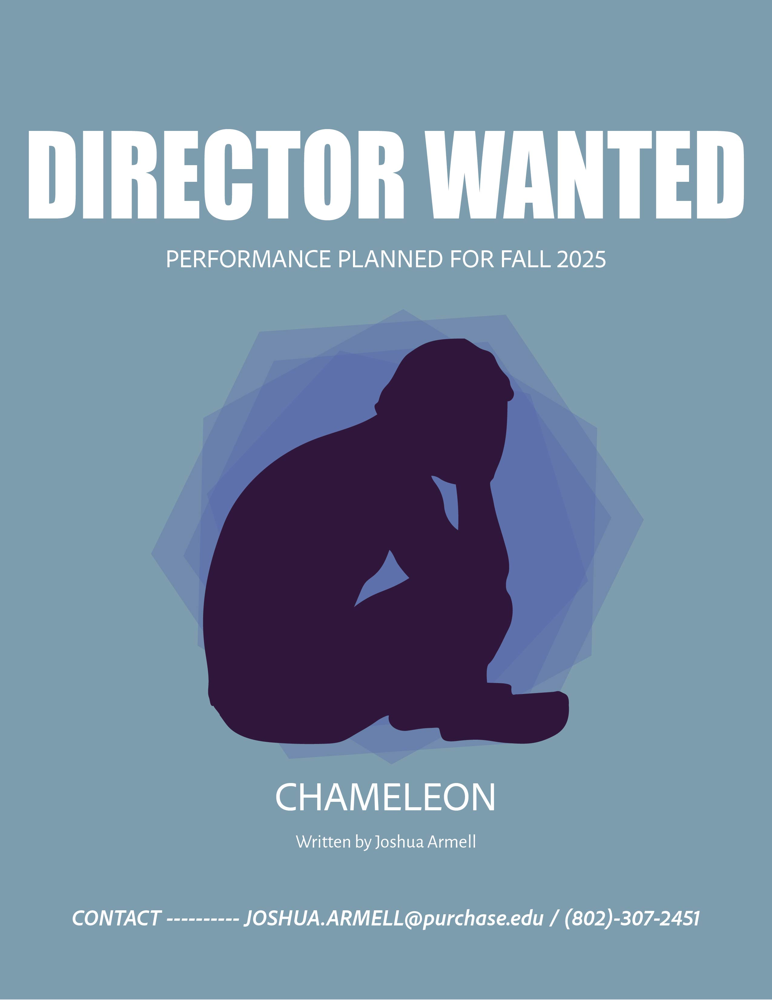

March 2025 project .
Personal project. Drawing incorperated design with a drawn figure in the background and drawn typography taking over the image itself.
Landscape photography by Liao Je Wei and Glenn Carstens from Unsplash.com
Chameleon


March 2025 project.
Main poster and director wanted flyer for a student-run college play, "Chameleon", for Fall 2025
Don't Bite
February 2025 project.
Personal project. Aggressive dog graphic inspired by by the phrase, "I don't know why I bite".
Vines, Wires & Heartstrings
Fall 2024 New Media Junior Show | November project.
Main poster for SUNY Purchase Fall 2024 New Media Junior Show. Detailing the exhibition name, artists showcased, and the name of the works presented by each artist.